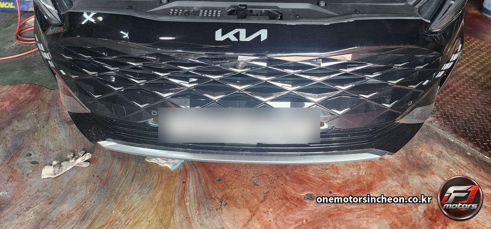
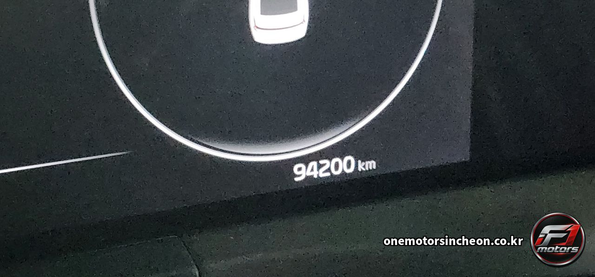
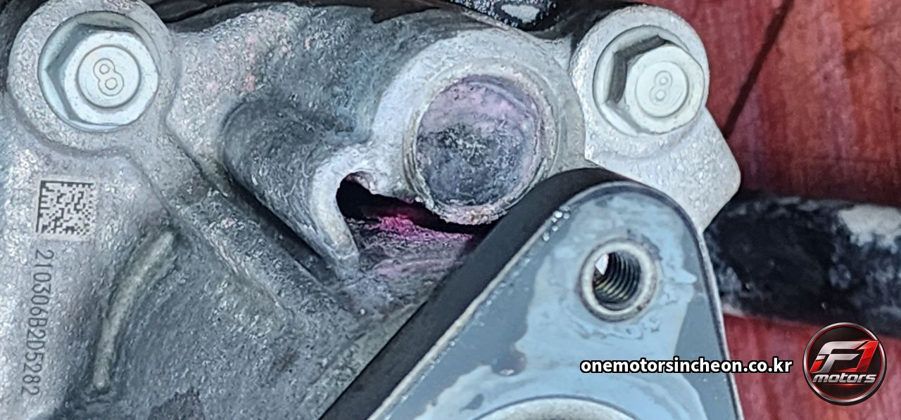
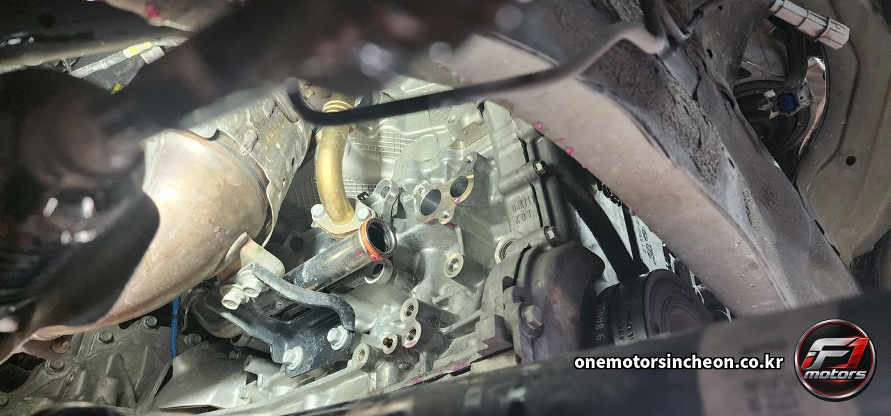
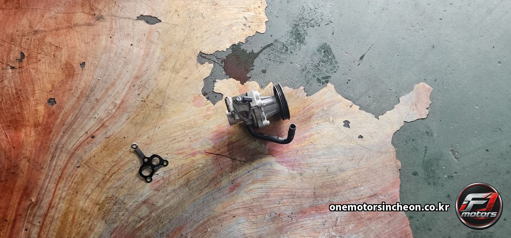
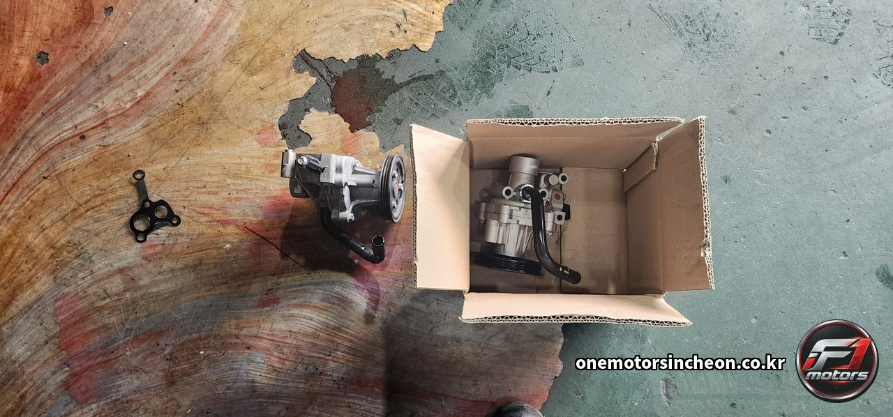
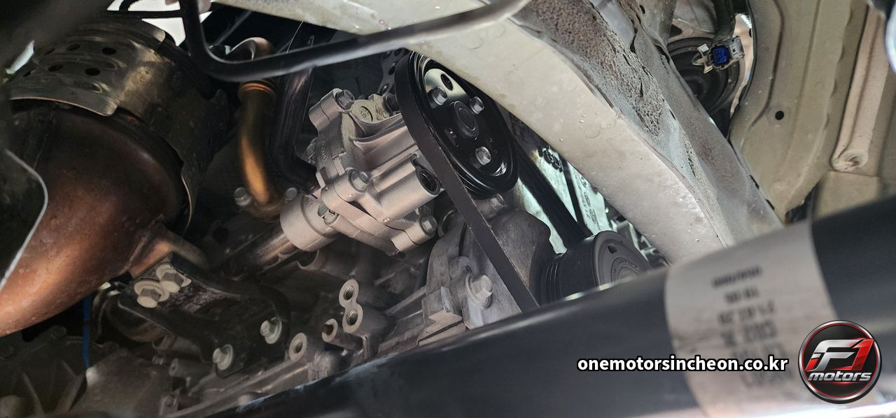

고장사례 및 검색 › K8
기아 K8 워터펌프 교환 — 누수 확인 구멍에서 새어 나온 부동액, 메커니컬 씰 수명 판정과 오링 · 펌프 가스켓 교환
- 차량
- 기아 K8 · 94,200 km
- 증상
- 냉각계통 점검으로 입고하셨습니다. 워터펌프 아래 누수 확인 구멍에 부동액이 말라붙어 있었습니다
- 원인
- 워터펌프는 회전하는 축으로 냉각수를 밀어내는 부품입니다. 축이 도는데 물은 새면 안 되니, 그 경계를 메커니컬 씰이 막고 있습니다. 두 장의 면을 맞대어 눌러 붙이는 방식이라 영구적인 밀봉은 아니고, 돌아가는 내내 아주 조금씩 닳습니다.
씰이 수명을 다하면 냉각수가 축을 타고 안쪽으로 넘어옵니다. 그대로 두면 베어링까지 들어가 펌프가 통째로 깨지기 때문에, 제작사는 씰과 베어링 사이에 구멍을 하나 뚫어 둡니다. 누수 확인 구멍입니다. 새기 시작한 냉각수를 베어링 쪽이 아니라 밖으로 흘려보내는 자리입니다.
사진 세 번째 장이 그 구멍입니다. 분홍색으로 말라붙은 것이 부동액입니다. 국산차 냉각수가 분홍색이라 자국이 선명하게 남습니다. 이 자국이 보인다는 것은 씰이 이미 제 역할을 놓았다는 뜻이고, 여기서 새는 것은 조이거나 실런트를 발라 잡는 성질의 누수가 아닙니다. 펌프를 교환해야 합니다.
이 구멍의 누수가 까다로운 점은 흔적이 바로 바닥에 떨어지지 않는다는 것입니다. 주행풍과 엔진 열에 날아가 구멍 주변에 결정으로만 남는 경우가 많습니다. 그래서 초기에는 주차 자리에 아무것도 안 보이고, 냉각수가 조금씩 줄어드는 것으로만 나타납니다.
펌프를 들어내면서 오링과 펌프 가스켓도 새것으로 넣었습니다. 접합면 실링 부품은 한 번 눌린 뒤 복원되지 않기 때문에 재사용하지 않습니다. 굳은 것을 다시 쓰면 펌프는 새것인데 그 자리에서 다시 샙니다.
마지막으로 부동액을 규정 농도로 채우고 계통의 공기를 빼냈습니다. 냉각계통에 공기가 남으면 수온 센서가 실제 온도를 못 읽거나 국부적으로 끓는 자리가 생기고, 히터 쪽으로 가는 물이 막혀 바람이 미지근해집니다. 펌프를 갈고도 증상이 남았다는 이야기는 대개 이 단계에서 나옵니다. - 수리내역
- 냉각계통 점검 — 누수 확인 구멍 부동액 흔적 확인 · 하부 커버 · 구동벨트 탈거 · 워터펌프 탈거 · 접합면 세척 · 워터펌프 신품 교환 · 오링 · 펌프 가스켓 교환 · 구동벨트 재체결 · 부동액 주입 · 계통 공기빼기 · 시동 후 누수 재점검
- 교환부품
- 워터펌프 · 오링 · 펌프 가스켓 · 부동액
정비 사진 7장







이런 증상으로 찾아오십니다
- K8 워터펌프 교환
- 기아 K8 워터펌프
- K8 냉각계통 정비
- K8 부동액 교환
- 워터펌프 교환
- 워터펌프 씰 불량
- 워터펌프 메커니컬 씰
- 누수 확인 구멍
- 워터펌프 웨어홀
- 웨어홀 부동액 자국
- 펌프 가스켓 교환
- 워터펌프 오링
- 냉각수 공기빼기
- 냉각계통 블리딩
- 부동액 규정 농도
- 분홍색 액체가 떨어져 있어요
- 냉각수가 조금씩 줄어드는데 바닥엔 자국이 없어요
- 수온이 평소보다 올라가요
- 히터 바람이 미지근해요
- 엔진룸에서 단 냄새가 희미하게 나요
- 워터펌프 주변에 하얗게 굳은 게 붙어 있어요
- 누수 확인 구멍에서 새면 수리가 되나요
- 워터펌프는 조여서 잡을 수 있나요
- 워터펌프 교환할 때 부동액도 갈아야 하나요
- 펌프만 갈면 되나요 가스켓도 같이 가나요
- 워터펌프 갈았는데 히터가 안 따뜻해요
- 냉각수 공기는 왜 빼야 하나요
- 국산차 워터펌프 교환 되나요
- 준대형 세단 냉각계통 점검
- K8 정비 맡길 곳
- 인천 K8 정비
- 인천 워터펌프 교환
- 인천 냉각계통 정비
- 인천 부동액 교환
- 제물포구 자동차정비
- 인천 송림동 정비소
- F1모터스
- 인천에프원모터스
비슷한 증상이 있으시면 전화로 상담해 주세요. 차종과 연식, 증상만 알려주시면 예상 원인을 안내해 드립니다.
인천에프원모터스는 제조사 공식 서비스센터가 아닌 독립 정비업체입니다. 정비 내용은 차량 상태에 따라 달라질 수 있습니다.